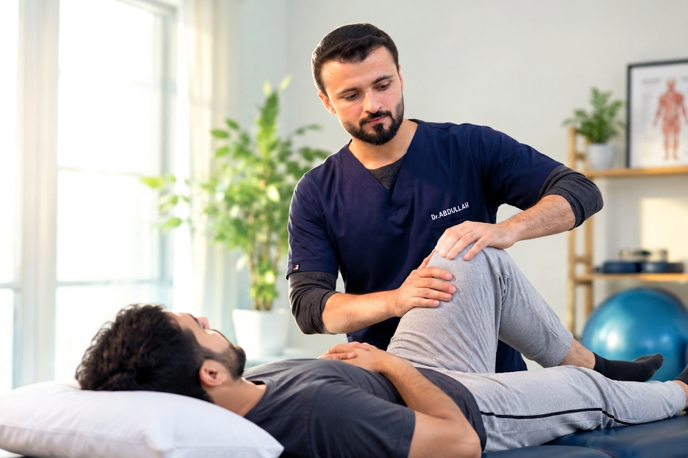
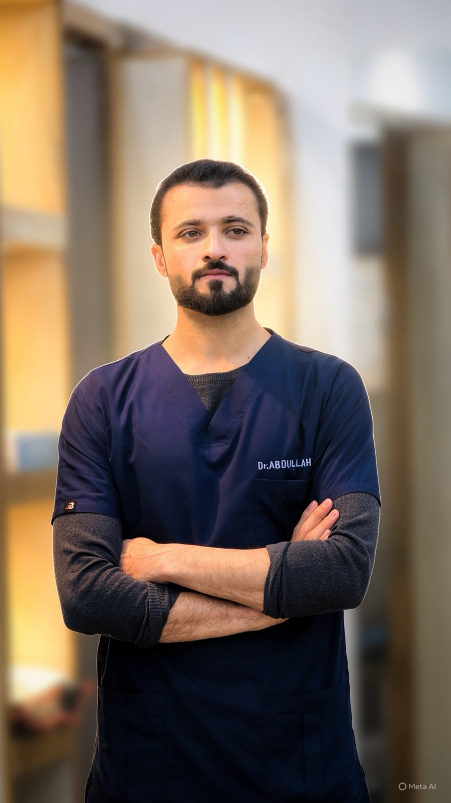
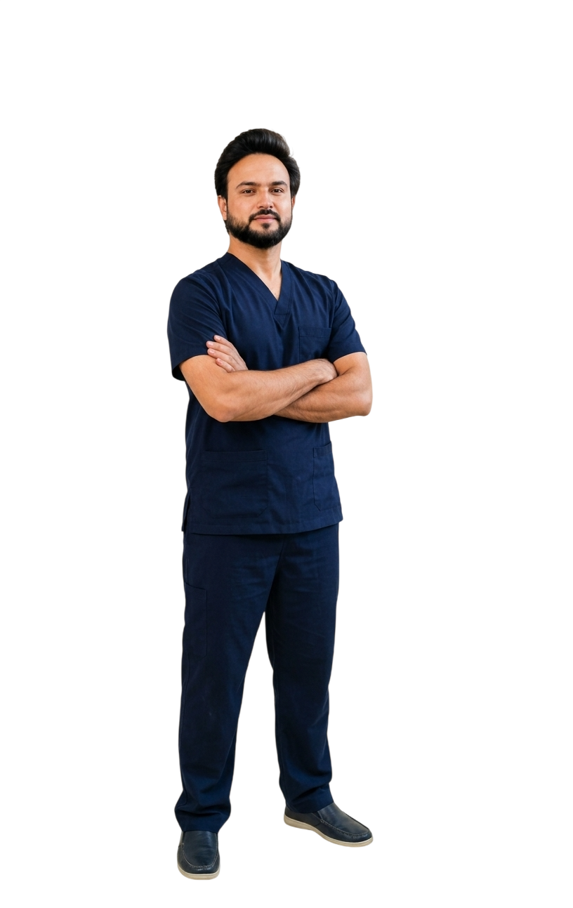

Our Mission
To provide high-quality physiotherapy services at home, helping patients manage pain, restore movement and improve their quality of life.
Mobile Physio was founded with a simple mission to make professional physiotherapy accessible to everyone at the comfort of their home. We believe that quality healthcare should come to you — no travel, no waiting rooms, just personalized care for a better and healthier life.
Book an Appointment
To provide high-quality physiotherapy services at home, helping patients manage pain, restore movement and improve their quality of life.
A healthier and more active community where professional rehabilitation is accessible, convenient and patient-focused.
Professionalism, compassion, evidence-based practice and patient-centered care in every treatment we provide.

CEO & Founder | Physiotherapist | Certified Fitness Trainer
Dr. Abdullah Ahmad (PT) is a dedicated Physiotherapist, Certified Fitness Trainer, and the CEO & Founder of Mobile Physio. Specializing in evidence-based rehabilitation and safe movement strategies, he delivers individualized clinical care across diverse patient needs.
His expertise covers stroke rehabilitation, sports injuries, pediatric physical therapy and developmental delays, as well as complex cervical and lumbar spine conditions.

Clinical Director & Consultant Physiotherapist | Musculoskeletal (MSK) Specialist
“Expert care that gets you moving again.”
Dr. Safdar Ali is a Consultant Physiotherapist and Musculoskeletal (MSK) Specialist. He holds his DPT from Khyber Medical University (KMU) and is currently pursuing his MS in Musculoskeletal Physiotherapy at KMU.
His clinical experience includes internships and rotations at RMI, PIC, Paraplegic Centre Peshawar, HMC, Fouji Foundation Hospital, and Mission Hospital. He subsequently gained 1.5 years of professional clinical experience at Spine Care & Rehabilitation Center (SPRC), Peshawar.
As a Certified Fitness Trainer, he combines physiotherapy and fitness principles to support pain management, rehabilitation, strength and functional recovery.
Let our physiotherapy team help you move better and work towards a healthier, more active life.